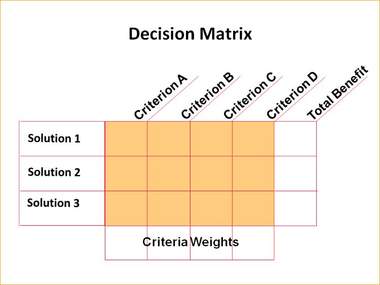

1. List options
Identify all the options or alternatives to be considered.
A decision matrix is a tool that assesses and prioritizes a list of options. A list of weighted criteria is formulated, and each option is assessed against those criteria.

Identify all the options or alternatives to be considered.
Identify the criteria that are important for the decision.
Assign a weight to each criterion based on its importance, for example, from 1 to 5.
Score each option against each criterion, for example, on a scale of 1 to 5. The highest number is best.
Multiply each criterion score by its weight, then sum the results for each option.
Compare the total weighted scores for each option.
Choose the option with the highest weighted score.
A community organization must choose one of three dates for a public workshop. Match each decision matrix step to an action. Drag actions, or use the Up and Down arrow keys.